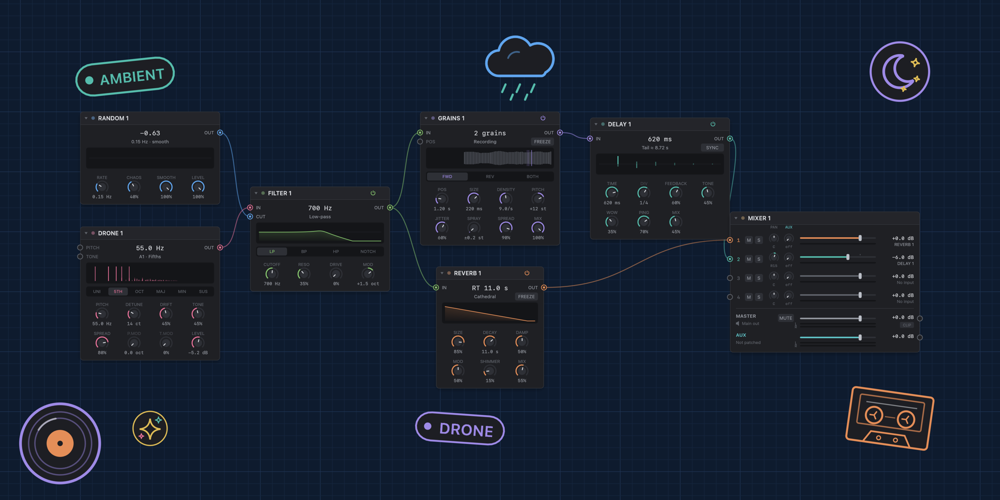
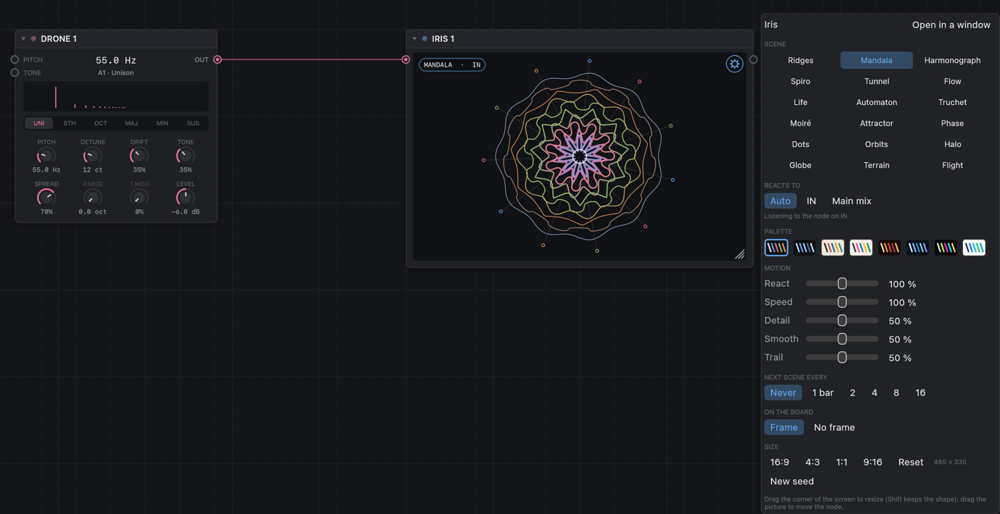

01Build and run
AudioBoard is a native Rust application: egui and eframe for the interface, cpal for audio, midir for MIDI, vst3-host for VST3 plugins and a small Objective-C host for Audio Units (built on macOS by build.rs). With a Rust toolchain installed, run it from the repository:
$ cargo run --releaseFor playing large patches, use the most optimized build: whole-program optimization gives about 10–15% less audio CPU, for a few minutes of compiling.
$ cargo run --profile distOn launch, an ambient demo patch opens, stopped. Press Start in the toolbar, or Space, to hear it.
02The demo patch

A Drone (a chord of fifths on A1) goes into a Filter whose cutoff is slowly moved by a Random. The filter feeds a Reverb with a touch of shimmer and, an octave up, a Granular cloud that ends in a tape Delay. Everything flows into the Mixer.
Every cable is stereo; mono sources write the same signal to both channels.
03Patching
- Add a node: drag it from the palette onto the canvas, click it to drop it in the middle of the view, or right-click the canvas.
- Connect: drag from a port to one of the opposite kind, output to input or the other way round. Each input takes a single cable.
- Reconnect or unplug: drag a cable away from the input it is plugged into. Double-click a cable (or right-click → Disconnect) to delete it.
- MIDI cables have square ports and are dashed; they only join a MIDI output to a MIDI input. Audio ports are round.
- Connections that would create a feedback loop are refused. Feedback lives inside nodes (Delay, Reverb, Larsen).
- Unplugging a MIDI cable, or deleting the node feeding it, sends note-offs for the notes still sounding, so no notes hang.
Resting the pointer on a node for a moment shows a small label with its type (“Reverb · hall · shimmer · freeze”, “AUv3 instrument” for an Audio Unit), since titles can be renamed. Right-click (or Ctrl+click) opens the menu for whatever is under the pointer: canvas, node, module or cable. Its first line says what it acts on: “4 nodes selected”, or the node's or module's name.
- Right-clicking something already selected keeps the whole selection, and the menu acts on all of it. Right-clicking something not selected selects it alone; with Shift (or Cmd) held, it joins the selection.
- Menus never lose the selection by themselves: the click (or Esc) that closes a menu does only that, and a right drag only moves the view.
- With a selection, the canvas menu starts with Make module from selection and Deselect.
Selection bar. While two or more nodes are selected, a small bar floats above them with the count and Make module, Collapse (or Expand), Duplicate and Delete, so a module can be made without any menu. It keeps its size at any zoom and hides while you drag, draw a selection rectangle or rename.
04Transport and tempo
Start / Stop (the toolbar, or Space) drive the transport, not the audio. Stop ends the sound's generation but lets it die away: sequencers, arpeggiators, MIDIcer, Automa and Colloid end the notes they were holding, oscillators and Drones fade out in a few milliseconds, while effects and plugins keep running so their tails ring on. Stop also goes back to the start: the next Start begins every node from its first step. The MIDI keyboard keeps playing plugins while stopped.
The tempo is global: the BPM field in the toolbar. Drag it (Shift for fine steps), click it to type a value (“97,5” works too), Alt+click to go back to 90. TAP (or T) sets it from your taps; a pause of two seconds starts a new count. Sequencers and arpeggiators are locked to the same grid, and the tempo is passed to plugins for their synced LFOs and delays.
External MIDI sync. In Settings → Sync the transport can follow a MIDI clock from one of the MIDI inputs (a drum machine, a DAW, a hardware sequencer) instead of keeping its own time:
- The tempo follows the clock's 24 ticks a beat, smoothed over the last beat of ticks, and a jump to a new tempo is caught within two ticks.
- Start plays from the top, Stop holds the position, Continue plays on, and the song position moves the board to the clock's place. The board's beat is steered onto the clock's, one audio buffer ahead, so what you hear lands on its beat.
- While it follows, the toolbar shows the clock's tempo next to SYNC, the BPM field and TAP are locked, and the transport button shows EXT. If the clock stops ticking, the transport stops; the project's own tempo is never changed.
The board can also send its clock to MIDI outputs (Settings → Sync → Send clock, one switch per output): 24 ticks a beat at the board's tempo, Start, Stop, and the song position with Continue. Ticks leave when their beat is heard. Following a clock and sending one relays it, skipping the source's own output so the clock can't loop.
05Controls
| Action | Gesture |
|---|---|
| Add a node or a library module | Drag it from the palette onto the canvas (or click it), or right-click the canvas |
| Connect | Drag from a port to the opposite kind |
| Reconnect / unplug a cable | Drag it away from the input it is plugged into |
| Delete a cable | Double-click it, or right-click → Disconnect |
| Adjust knobs and faders | Drag (Shift for fine), double-click to reset. Stepped knobs step on smoothly however slowly you drag |
| Select several nodes | Drag a rectangle on empty canvas, or Shift+click (Cmd+A all, Esc none); Shift+click a module's header or card adds or removes the whole module; Shift+right-click adds what is under the pointer and opens its menu |
| Move the view | Two-finger scroll, drag with the right or middle button (also starting on a node or a module), or Alt+drag |
| Zoom | Pinch or Cmd+scroll; Cmd+= / Cmd+− / Cmd+0; or click the percentage in the status bar |
| Move / delete / duplicate the selection | Drag a selected node / Del / Cmd+D (inner cables are copied) |
| Delete a node | The × in its header, Del, or right-click → Delete; AudioBoard asks first, since deleting can't be undone |
| Make a module from the selection | Make module on the selection bar, Cmd+G, or right-click → Make module |
| Rename a module | Enter or F2 with it selected, or right-click → Rename… |
| Dissolve a module | Cmd+Shift+G, the × in its header, or right-click → Ungroup |
| Collapse / expand a node or module | The arrow in the header, double-click the title, C, or right-click → Collapse |
| Collapse / expand everything | Shift+C, the toolbar button, or right-click the canvas |
| Frame everything / the selection | F / Shift+F |
| Bypass an effect | The power button in its header, B over it, or right-click → Bypass; crossfaded, and saved with the project |
| Zoom in on one node | Z over it, or right-click → Zoom to node; Z or Esc goes back |
| Auto layout | L, the toolbar button or right-click the canvas; Cmd+Z undoes it |
| Auto-fit (keep the whole patch in view) | A or the toolbar button |
| Resize an Iris | Drag the grip in its bottom right corner (Shift keeps the shape); the gear opens its settings |
| Add a sticker / change the background | Right-click empty canvas → Stickers ▸ / Background ▸, or drag image files onto the canvas |
| New / open project | Cmd+N / Cmd+O, or the project name in the toolbar (Open Recent lists the last ten) |
| Save / save as | Cmd+S / Shift+Cmd+S |
| Start / stop | The toolbar button, or Space |
| Settings (audio, MIDI, sync, plugins) | Cmd+,, the sliders button in the toolbar, or the device name |
| Record / stop recording | REC in the toolbar, or R; stopping opens the export |
| Tempo | Drag the BPM field, click it to type, TAP or T |
| Oscilloscope and spectrum | The panel button in the toolbar |
The full list of shortcuts appears when hovering the ? button in the toolbar. A collapsed node takes up only a strip with its title, ports and main value; cables and audio keep working normally.
06Modules
A module groups several nodes into one, to move, collapse and duplicate them together. Select nodes and click Make module on the selection bar (or press Cmd+G); rename it right in the header with Enter.
Modules grow by merging: select a module (click its header or card), Shift+click more nodes or other modules, then Make module. The new module holds them all, and the modules it took in dissolve into it, since a node belongs to one module only.
- Expanded: a frame around the nodes, which stay editable in place. Dragging the header moves the whole module.
- Collapsed: a single card showing only the boundary ports, such as
DRONE 1 · PITCHorFILTER 1 · OUT. External cables attach to the card. - Duplicating copies the nodes, the cables between them and the module itself. Del deletes the module with its nodes; Ungroup dissolves it and keeps them.
Grouping is only visual: the sound does not change.
07Auto layout and zoom
Auto layout (L) arranges the patch along the signal flow: columns from left to right, from the sources to the mixer. In each column, blocks line up with the ports they are connected to, so cables run as straight as possible; modulators end up right before what they modulate, and cables that skip a column get a clear corridor. With two or more nodes selected, only the selection is arranged. Nodes glide to their places; Cmd+Z restores the previous arrangement.
F fits the view to the whole patch, Shift+F to the selection. Auto-fit (A) keeps the whole patch in view while you add, remove, collapse or move nodes, until you zoom or pan by hand.
08Palette
The panel on the left lists all nodes by category and the library modules, with a search field. Click a category's heading to fold it; while searching, every category with matches opens. Drag an entry onto the canvas (an outline shows where it lands), or click it to add it in the middle of the view. Installed plugins, VST3 and Audio Units (AUv3 and AU), are grouped by maker, and the search matches makers too.
Plugin nodes, nodes built with AudioBoard's own Rust SDK, have a section of their own, by maker as well. Put a plugin's library (.dylib) in ~/Library/Application Support/AudioBoard/Nodes (the section's Open Nodes folder link opens it) and press Rescan. They work like built-in nodes, with the generic panel, and a project saves them by a stable id: one whose plugin isn't installed opens without that node and says which is missing. The SDK page shows how to make one.
09Stickers and background

Make the board your own with stickers and a different background, both from the right-click menu on empty canvas (Stickers ▸ and Background ▸). They are saved with the project, images included, so it opens looking the same on another computer.
- Built-in stickers: fourteen designs (wave, moon, cassette, knob, bolt, mushroom, planet, heart, sparkle, headphones, speaker, leaf, sun, eye) and six tags (AMBIENT, DRONE, LOOP, LIVE, WIP, NO INPUT), flat line art in the board's colours, sharp at any zoom.
- Image stickers: PNG with its transparent background, JPG, SVG (and WebP). Add them with Image file…, or drag files from the Finder onto the canvas. An SVG stays a vector, drawn again at the size it is shown; PNG and JPG are shrunk to 1024 pixels if larger. Images in the stickers folder (
~/Library/Application Support/AudioBoard/Stickers) are listed in the menu, and Example files adds the four SVGs inassets/stickers. - Moving and shaping: drag a sticker to move it; click it to select it, then drag the square handle to resize it or the round one to rotate it (Shift: 15° steps). Del deletes it, Esc lets it go.
- Its menu (right-click a sticker): Bring to front, Send to back, Rotate, Straighten, Duplicate, Lock and Delete. A locked sticker lets clicks through, so selecting and panning work over it.
Stickers sit behind modules, cables and nodes, so they never get in the way of patching. The background has eight presets, each a colour and a grid: Graphite (the usual), Dots, Blueprint, Night, Moss, Ember, Plum and Plain. Image… puts a picture (PNG, JPG, SVG) behind the board, filling the view without stretching; Veil sets how much the preset's colour covers it, so nodes stay readable, and Grid shows or hides the grid.
10Visuals: Iris

Iris (in the Visual group) is a screen on the board where visuals react to the sound. Patch a node into its IN and it follows that node only; with IN free it follows the main mix, everything the board plays. The settings can force either one (Auto, IN, Main mix). THRU passes the sound on unchanged, so Iris can sit inside a chain.
- Move and resize: drag the picture to move the node; while the pointer is over it, a grip appears in the bottom right corner: drag it to resize the screen (Shift keeps its shape). The scene's name shows at the top left.
- Settings: the gear at the top right opens them in a popup beside the node, so the picture stays in view: the scene (eighteen: geometric, mathematical, generative, 3D), Auto, IN or Main mix, eight palettes, React, Speed, Detail, Smooth, Trail, a new scene every 1 to 16 bars, frame or no frame, the screen's shape and a new seed.
- No frame: the node's card goes and the picture fills the whole node, as if stuck on the board. The ports stay on its edges, an outline shows while it is selected, and the scene's name, gear and grip still show under the pointer.
- Open in a window: the picture in a window of its own, for a second display or a projector. Double-click it for full screen; Esc leaves full screen, then closes it. It keeps playing when the node is off the view.
Every scene is in the catalogue, with a picture of each.
11Settings
Settings (Cmd+,, the sliders button in the toolbar, or the device name) has four tabs down its left side: Audio, MIDI, Sync and Plugins. Each is made of titled cards of rows, with a status line under them, green when all is well. Every change applies at once and is kept between launches.
Audio chooses the sound card:
- Output device: the system default (following the Mac's choice) or a specific interface; a device missing at launch falls back to the default.
- Channels: the pair the board plays on (1–2, 3–4…), for interfaces with more outputs.
- Sample rate: the device's own, or 44.1 to 192 kHz. A new rate builds every node again; the patch, its settings and cables stay. Buffer size: see below.
- Input: off, the system default, or a specific device, running at the output's rate, with a meter per channel while the window is open. Input and output can be different devices, kept in step by a buffer of cushion; the same interface for both avoids tiny gaps when their clocks drift.
- Audio system: shown when the platform has more than one (CoreAudio, JACK…). Refresh devices reads the list again; it also refreshes itself every few seconds while the window is open.
MIDI lists the inputs connected (all are used, and one plugged in is picked up within seconds), each with a notes light and a clock light; the one followed as the clock is marked SYNC SOURCE.
Sync chooses the transport's clock, Internal or MIDI clock from one of the inputs, with a status line for the tempo received and where it plays; Send clock has a switch for each MIDI output (see Transport and tempo).
Plugins shows the VST3 folders and how many plugins they hold, switches for listing Audio Units and Apple's own, the plugin nodes' folders and the libraries loaded from them, and Rescan plugins, which rescans plugin nodes too.
12Buffer, load and limiter
The status bar shows the audio buffer in samples and its latency (“512 smp · 10.7 ms”): click it to choose another size, as in a DAW. Larger buffers give heavy patches and plugins more headroom; smaller ones respond faster. Changing it keeps the patch playing.
DSP is the average load and peak the heaviest callback of the last seconds. Near 100% the audio can't keep up, and a red dropouts counter appears: try a larger buffer.
The output goes through a safety limiter just under full scale (−0.3 dBFS) with 1.3 ms of lookahead: a loud sum is turned down smoothly instead of clipping into crackles, and the status bar shows “limit −x dB”. OUT in the toolbar sets the overall level from −24 to +12 dB, before the limiter.
Gain staging follows a DAW's: a new mixer's MASTER starts at 0 dB, pan is a stereo balance, and a source at −6 dBFS through a fresh mixer reaches the device at −6 dBFS.
13Recording and export
REC in the toolbar (or R) records what the board plays: the device's output after the limiter, exactly what you hear. The take goes straight to a temporary file, so it can be as long as you like. R again stops and opens Export recording, with the take's length, rate and peak.
Options: normalize the peak to −1 dBFS, and trim the silence at both ends (10 ms kept around the sound). The export runs in the background, and the take stays available from EXPORT in the toolbar until the next recording, Discard take, or quitting. For MP3, install lame or ffmpeg:
$ brew install lame14Projects and library
The project name in the toolbar opens the File menu: New project, Open…, Open Recent, Save, Save as…. Open Recent lists the last ten projects opened or saved, newest first, with their folder, and is kept between launches; a project that is no longer there is greyed out, and Clear menu empties the list.
A dot next to the name, and “(edited)” in the window title, flag unsaved changes; AudioBoard asks before discarding them. A project (.audioboard) is a JSON file with nodes and parameters, positions, colours, collapsed nodes, cables and modules, and the board's stickers and background (images inside, base64); parameters are saved by name, built-in modules by name and plugin nodes by their stable id.
Module library. Right-click a module's header → Save to library. Saved modules appear in the Library section of the palette and of the right-click menu: inserting one adds the nodes, their cables and settings as a new module, already collapsed to a card. Open library folder opens the folder of .abmodule files (~/Library/Application Support/AudioBoard/Library on macOS), handy for sharing them.
Named presets of Nullpunkt, Aether, Larsen and Vesper are kept in the app's data folder too, so every project sees them.
15Tests
$ cargo testLoading and playing real Audio Units (Apple's, always installed, and a few others found on the Mac) is a test of its own, not run by default:
$ cargo test -- --ignored audio_units_load_and_play --nocaptureBenchmarks (audio per module, large patches, UI frames, auto layout) don't run with the normal tests:
$ cargo test --release perf -- --ignored --nocapture --test-threads=1